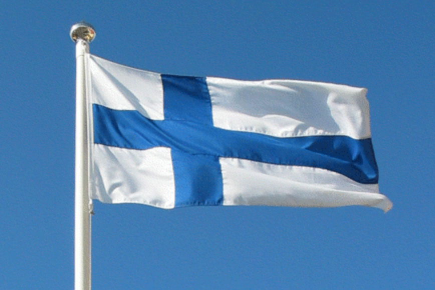

A typical autumn in Finlnd.
I first came to Finland on September 18 th 2010. It was very beautiful sunny day with colorful leaves of trees. I saw sea for the first time in my life, I was so happy on my arrival in Finland. But on the other hand, there were difficult situation too: new place, new weather, new people, modern society and on top of all these I had to find some sort of job to accomodate myself because I did not think of giving financial pressure to my family back home anymore. After two or three month I was able to find some job to accomodate myself and I was studying and working at the same time. It was not easy. I could not focus on my studies well but I was passing every course with good grades. If you would like to know about my study subject at arcada you can click hereLast but not list, I gave my information about my past education. Currently I am a student at Haaga-Helia. I am enjoying my study and I am hoping to continue in software engineering path. Finland is a great country for education and health care. I <3 Finland and finnish people. If you would like to know about finnish education please do not hesitate to click this finnish flag image; 